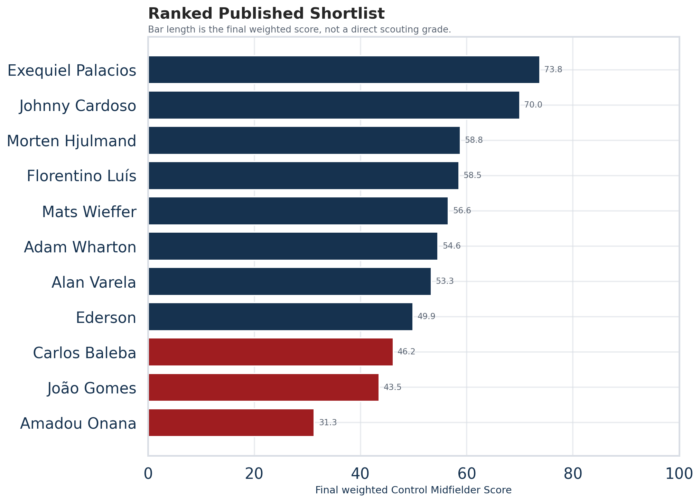
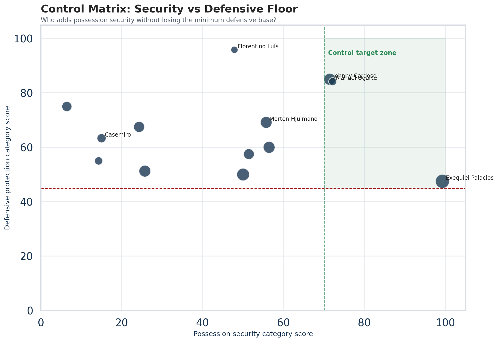
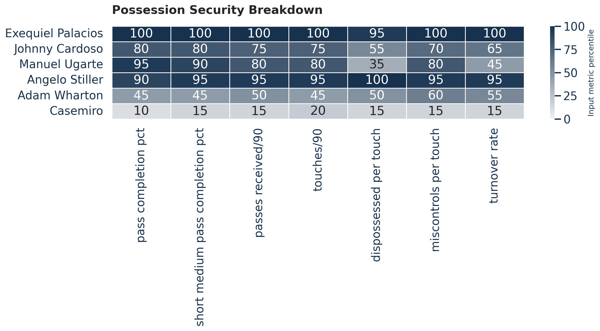
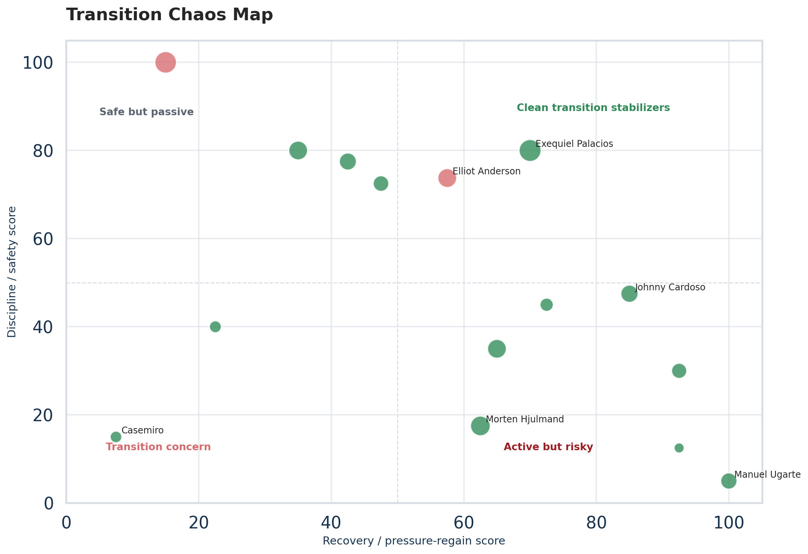
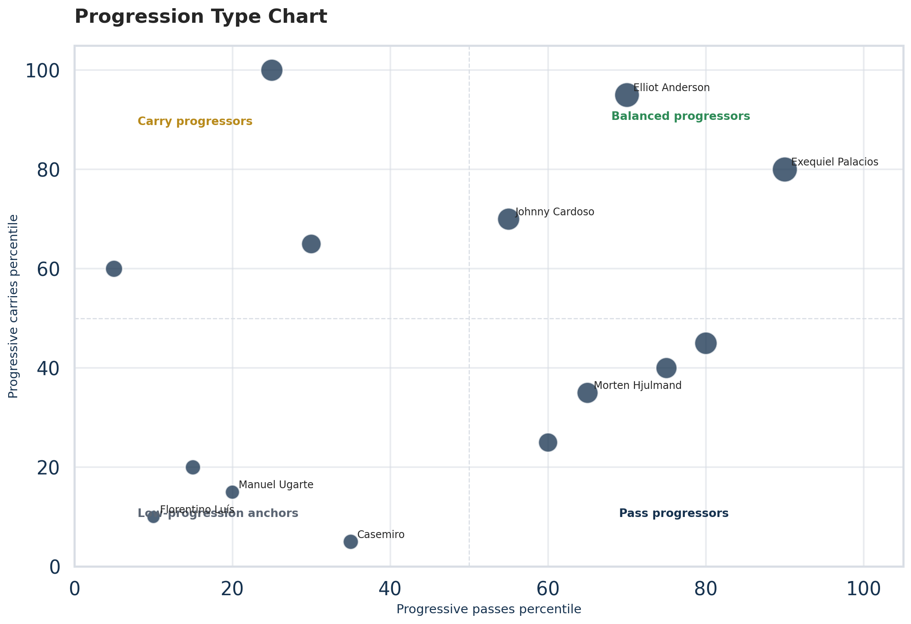
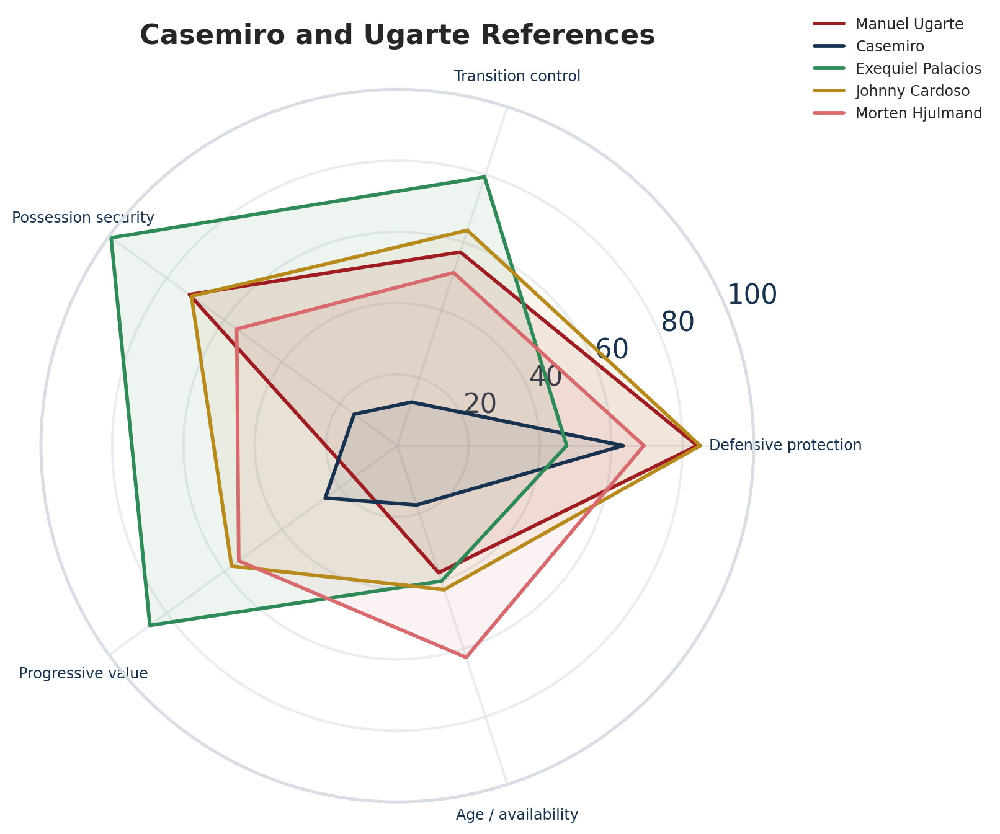
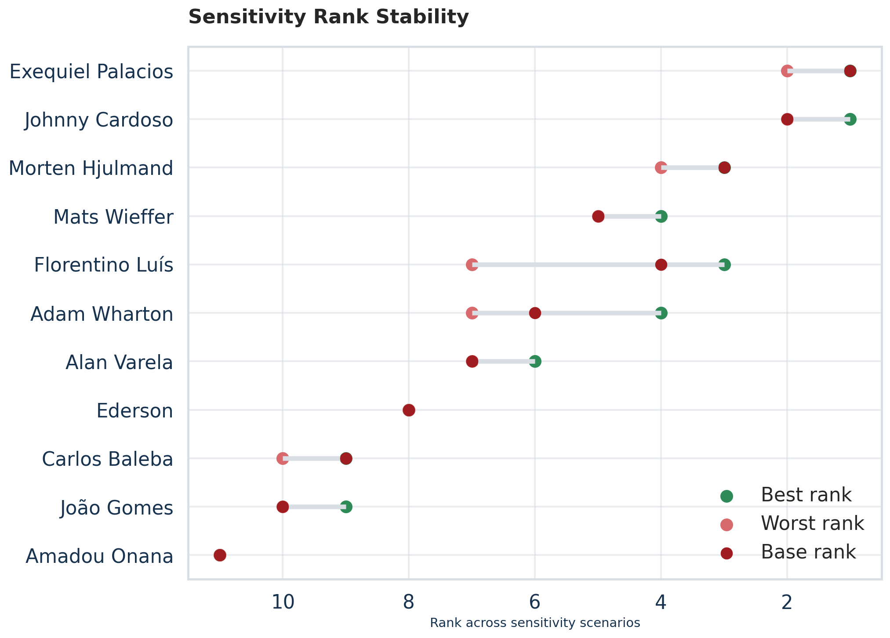
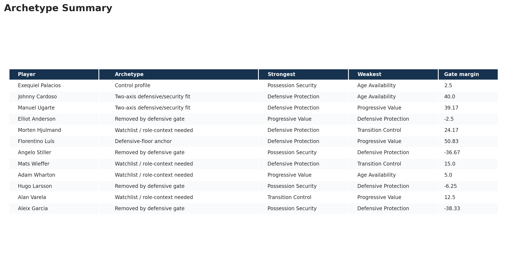

Executive View
Palacios is the strongest possession-control candidate in the screen, not the strongest like-for-like Casemiro replacement. Cardoso is the cleaner two-axis defensive/security fit.
What This Model Is — and Is Not
This is a recruitment screen, not a signing verdict. It converts United's abstract need for midfield control into a transparent, auditable public-data framework.
It is designed to focus scouting/video discussion. It does not replace club scouting, medical review, contract work, fee analysis, or tactical video.
How the Score Works
Formula: 30% defensive protection + 25% transition control + 25% possession security + 15% progressive value + 5% age / availability.
Each input metric is first converted into a comparable rate, percentage, or per-touch measure. It is then normalized into a 0-100 percentile-style score within the screened player pool. For negative events such as fouls, cards, miscontrols, dispossessions, and turnover rate, the score is inverted so that safer players receive higher values. Category scores are calculated as the average of available input-metric scores. The final Control Midfielder Score is a weighted average of the five category scores.
A 100 means the player is at the top of this public screened pool for that metric or category. It does not mean perfect football ability.
Why These Weights?
The weighting scheme reflects Manchester United's specific midfield-control problem. This is not a search for the best pure ball-winner. It is a search for a midfielder who can preserve enough defensive protection while improving control.
- Defensive protection receives 30%, the highest single weight, because any Casemiro replacement profile must still protect the back line, defend central spaces, and survive defensive responsibility.
- Transition control receives 25% because United's issue is not only settled defending; it is also the number of chaotic moments created after possession breaks.
- Possession security receives 25% because the deeper thesis is that United need control. A midfielder who loses possession too often will recreate the same emergency-defending problem even if he wins duels.
- Progressive value receives 15% because United still need the player to move the ball forward, but this role should not become a pure creator search.
- Age / availability receives 5% because practical squad-building context matters, but it should not overpower the football profile.
The weighting scheme is designed to reward midfielders who can defend first, stabilize transitions second, secure possession third, and progress the ball without turning the role into a high-risk creator profile.
These weights are subjective but transparent. That is why the report includes sensitivity analysis to test whether the shortlist collapses when reasonable weighting assumptions change.
Why Use a Defensive Gate?
A weight ranks players. A gate enforces a minimum requirement.
Even though defensive protection has the highest single weight, a player can still score highly overall if he is elite in possession security and progression. For a Casemiro replacement profile, that creates a risk: the model could surface elegant possession players who do not have enough defensive evidence to survive United's midfield environment.
The defensive gate should be read as a minimum-evidence filter, not as a final judgment on defensive ability. Palacios clears the defensive gate narrowly, so he should not be treated as a pure defensive replacement. Elliot Anderson falls just below the gate, so he should remain a watchlist player rather than be treated as definitively rejected.
This is why the report separates the published shortlist from the watchlist rather than deleting below-gate players entirely. Borderline differences around the gate should be tested with video, tactical role context, league translation, and team style.
From Input Metrics to Category Scores
| Category | Input metrics | Transformation | What it means |
|---|---|---|---|
| Age / availability | age_score, minutes_score | Percentile / inverse percentile | Rewards players in a more useful squad-building age band. Rewards players with enough recent minutes to make the signal more reliable. |
| Defensive protection | tackles_interceptions_per90, interceptions_per90, dribblers_tackled_pct, blocks_per90, aerial_duel_win_pct, def_mid_third_actions_per90 | Percentile / inverse percentile | Captures ball-winning activity and defensive involvement. Captures anticipation and ability to cut passing lanes. |
| Possession security | pass_completion_pct, short_medium_pass_completion_pct, passes_received_per90, touches_per90, dispossessed_per_touch, miscontrols_per_touch, turnover_rate | Percentile / inverse percentile | Captures basic reliability in possession. Captures security in circulation phases. |
| Progressive value | progressive_passes_per90, progressive_carries_per90, passes_into_final_third_per90, carries_into_final_third_per90, progressive_passing_distance_per90, live_ball_sca_per90 | Percentile / inverse percentile | Captures forward passing value. Captures ability to move possession forward by carrying. |
| Transition control | ball_recoveries_per90, pressure_regains_per90, def_actions_after_loss_per90, fouls_committed_per90, cards_per90, miscontrols_per90, dispossessed_per90 | Percentile / inverse percentile | Captures ability to regain loose balls and stabilize broken play. Captures whether the player helps stop counters early. |
Ranked Published Shortlist
The final score uses all five categories.

| # | Player | Club | League | Age | Score | Defence | Transition | Security | Progression | Gate margin |
|---|---|---|---|---|---|---|---|---|---|---|
| 1 | Exequiel Palacios | Bayer Leverkusen | Bundesliga | 27 | 73.77 | 47.50 | 79.29 | 99.29 | 85.83 | 2.50 |
| 2 | Johnny Cardoso | Atletico Madrid | La Liga | 24 | 70.00 | 85.00 | 63.57 | 71.43 | 57.50 | 40.00 |
| 3 | Morten Hjulmand | Sporting CP | Primeira Liga | 26 | 58.82 | 69.17 | 51.07 | 55.71 | 55.00 | 24.17 |
| 4 | Florentino Luís | Burnley | Premier League | 26 | 58.54 | 95.83 | 59.29 | 47.86 | 8.33 | 50.83 |
| 5 | Mats Wieffer | Brighton & Hove Albion | Premier League | 26 | 56.57 | 60.00 | 52.86 | 56.43 | 55.83 | 15.00 |
| 6 | Adam Wharton | Crystal Palace | Premier League | 22 | 54.61 | 50.00 | 61.43 | 50.00 | 67.50 | 5.00 |
| 7 | Alan Varela | Porto | Primeira Liga | 24 | 53.32 | 57.50 | 57.86 | 51.43 | 42.50 | 12.50 |
| 8 | Ederson | Atalanta | Serie A | 26 | 49.91 | 67.50 | 52.86 | 24.29 | 45.00 | 22.50 |
| 9 | Carlos Baleba | Brighton & Hove Albion | Premier League | 22 | 46.17 | 51.25 | 50.71 | 25.71 | 55.83 | 6.25 |
| 10 | João Gomes | Wolverhampton Wanderers | Premier League | 25 | 43.55 | 75.00 | 44.29 | 6.43 | 35.83 | 30.00 |
| 11 | Amadou Onana | Aston Villa | Premier League | 24 | 31.32 | 55.00 | 25.00 | 14.29 | 16.67 | 10.00 |
Control Matrix
Who adds possession security without losing the defensive floor?

Defensive Gate Diagnostic
The gate is useful as a screen, but the Palacios-Anderson gap shows why borderline cases should not be treated as definitive scouting judgments.

Possession Security Breakdown
This plot separates players who simply pass safely from players who are actively available, involved, and secure under volume.

Transition Chaos Map
United's issue is not only ball-winning. It is the number of unstable moments after possession breaks. This chart highlights players who regain or stabilize play without creating new problems.

Progression Type
Progression is not one skill. Some midfielders move the ball through passing, others through carrying. United should know which type they are buying.

Casemiro and Ugarte References
Casemiro is an ageing defensive responsibility reference, not the clone target. Ugarte already covers much of the defence/security base, but his low progression score suggests United may still need a complementary midfielder who can add control without limiting progression.

Sensitivity and Practicality
Sensitivity analysis tests whether the shortlist depends too heavily on one subjective weighting choice. A robust candidate remains near the top under several reasonable versions of the model. A fragile candidate ranks highly only when the model favors one specific trait.
Sensitivity analysis is used because the category weights are transparent but still subjective. If a candidate only ranks well under one weighting scheme, the model is telling us that the recommendation is fragile. If a candidate stays high across multiple schemes, the player is a more robust scouting priority.
If Palacios drops in defensive-heavy scenarios, that confirms he is a control candidate whose defensive translation needs review. If Cardoso stays high across base, defensive-heavy, and possession-heavy scenarios, that supports his two-axis fit. If a player rises only in progression-heavy scenarios, he may be more of a progression specialist than a Casemiro replacement profile. If a player ranks well defensively but poorly in possession-heavy scenarios, he may recreate the original control problem.

| scenario | player | rank_base | rank_defensive_heavy | rank_possession_heavy | rank_transition_heavy | rank_progression_heavy | rank_equal_weight | rank_range | rank_stability_score |
|---|---|---|---|---|---|---|---|---|---|
| Exequiel Palacios | 1 | 2 | 1 | 1 | 1 | 1 | 1 | 75.0 | |
| Johnny Cardoso | 2 | 1 | 2 | 2 | 2 | 2 | 1 | 75.0 | |
| Morten Hjulmand | 3 | 4 | 3 | 3 | 3 | 3 | 1 | 75.0 | |
| Mats Wieffer | 5 | 5 | 4 | 5 | 5 | 4 | 1 | 75.0 | |
| Florentino Luís | 4 | 3 | 5 | 4 | 7 | 6 | 4 | 0.0 | |
| Adam Wharton | 6 | 7 | 6 | 6 | 4 | 5 | 3 | 25.0 | |
| Alan Varela | 7 | 6 | 7 | 7 | 6 | 7 | 1 | 75.0 | |
| Ederson | 8 | 8 | 8 | 8 | 8 | 8 | 0 | 100.0 | |
| Carlos Baleba | 9 | 10 | 9 | 9 | 9 | 9 | 1 | 75.0 | |
| João Gomes | 10 | 9 | 10 | 10 | 10 | 10 | 1 | 75.0 | |
| Amadou Onana | 11 | 11 | 11 | 11 | 11 | 11 | 0 | 100.0 |
Archetype Summary
The model gives the answer. The diagnostic charts explain the answer.

| player | club | final_score | archetype_label | strongest_category | weakest_category | gate_margin | analyst_note |
|---|---|---|---|---|---|---|---|
| Exequiel Palacios | Bayer Leverkusen | 73.77 | Control profile | possession_security | age_availability | 2.50 | Borderline defensive-gate profile; strongest in possession security, weakest in age availability. Role and video review should test defensive translation. |
| Johnny Cardoso | Atletico Madrid | 70.00 | Two-axis defensive/security fit | defensive_protection | age_availability | 40.00 | Strongest in defensive protection; weakest in age availability. Use video to test role fit. |
| Manuel Ugarte | Manchester United | 61.70 | Two-axis defensive/security fit | defensive_protection | progressive_value | 39.17 | Strongest in defensive protection; weakest in progressive value. Use video to test role fit. |
| Elliot Anderson | Nottingham Forest | 61.66 | Removed by defensive gate | progressive_value | defensive_protection | -2.50 | Below the light defensive gate by 2.5 points; keep for video/context review rather than treating as rejected. |
| Morten Hjulmand | Sporting CP | 58.82 | Watchlist / role-context needed | defensive_protection | transition_control | 24.17 | Strongest in defensive protection; weakest in transition control. Use video to test role fit. |
| Florentino Luís | Burnley | 58.54 | Defensive-floor anchor | defensive_protection | progressive_value | 50.83 | Strongest in defensive protection; weakest in progressive value. Use video to test role fit. |
| Angelo Stiller | Stuttgart | 56.68 | Removed by defensive gate | possession_security | defensive_protection | -36.67 | Below the light defensive gate by 36.7 points; keep for video/context review rather than treating as rejected. |
| Mats Wieffer | Brighton & Hove Albion | 56.57 | Watchlist / role-context needed | defensive_protection | transition_control | 15.00 | Strongest in defensive protection; weakest in transition control. Use video to test role fit. |
| Adam Wharton | Crystal Palace | 54.61 | Watchlist / role-context needed | progressive_value | age_availability | 5.00 | Borderline defensive-gate profile; strongest in progressive value, weakest in age availability. Role and video review should test defensive translation. |
| Hugo Larsson | Eintracht Frankfurt | 54.29 | Removed by defensive gate | possession_security | defensive_protection | -6.25 | Below the light defensive gate by 6.2 points; keep for video/context review rather than treating as rejected. |
| Alan Varela | Porto | 53.32 | Watchlist / role-context needed | transition_control | progressive_value | 12.50 | Strongest in transition control; weakest in progressive value. Use video to test role fit. |
| Aleix Garcia | Bayer Leverkusen | 53.21 | Removed by defensive gate | possession_security | defensive_protection | -38.33 | Below the light defensive gate by 38.3 points; keep for video/context review rather than treating as rejected. |
Watchlist: Removed by Defensive Gate
These players remain analytically interesting. They are not rejected; they are moved to video/context review. The defensive gate is not a claim that players below the threshold cannot defend. It is a minimum-evidence filter for this specific role profile.
| Player | Club | Score | Defence | Gate margin | Lowest category | Context note |
|---|---|---|---|---|---|---|
| Elliot Anderson | Nottingham Forest | 61.66 | 42.50 | -2.50 | defensive_protection | May 2026 EPL target pool: high-cost controller, availability caveat |
| Angelo Stiller | Stuttgart | 56.68 | 8.33 | -36.67 | defensive_protection | High-volume passer |
| Hugo Larsson | Eintracht Frankfurt | 54.29 | 38.75 | -6.25 | defensive_protection | Bundesliga target pool: young two-way controller |
| Aleix Garcia | Bayer Leverkusen | 53.21 | 6.67 | -38.33 | defensive_protection | Bundesliga target pool: possession controller, lighter duelling profile |
| Samuele Ricci | AC Milan | 49.23 | 28.75 | -16.25 | defensive_protection | Serie A target pool: press-resistant possession profile |
| Bruno Guimarães | Newcastle United | 47.92 | 27.50 | -17.50 | defensive_protection | Control creator, premium market |
| Youssouf Fofana | AC Milan | 38.15 | 36.25 | -8.75 | possession_security | Serie A target pool: range, carries, and duels |
Limitations
- Public data cannot replace club scouting.
- Aggregate stats lose role, possession, pressure, and team-context detail.
- StatsBomb open data is limited to selected competitions.
- Public statsbombpy access should not be treated as full 360 data access.
- League strength and team style affect metrics.
- Injury history and transfer feasibility require separate work.
- The defensive gate is a screen, not a verdict.
Recommended Next Scouting Questions
- Palacios: Can his defensive work translate to United's transition-heavy environment? Is his availability/injury history acceptable? Does he receive under pressure in central zones or mainly in cleaner structures?
- Cardoso: Does his defensive range hold against Premier League tempo? Can he progress play enough to avoid becoming too conservative?
- Hjulmand: Is he clean enough under pressure to solve United's control issue?
- Florentino Luís: Is the possession limitation too severe for a control brief?
- Wieffer: Does he offer enough mobility and transition coverage?